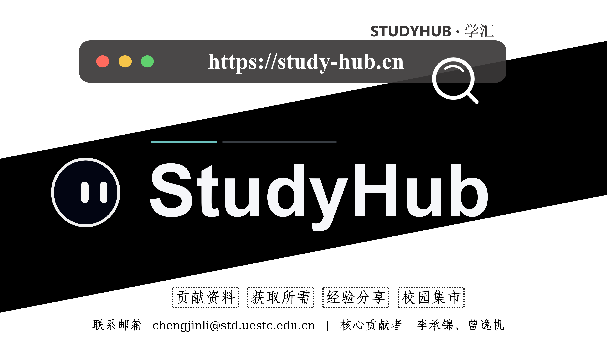

01
345 用户
AI + MCP
开源平台
独立设计、开发并运营校园知识共享与互助平台，覆盖资料共享、经验分享、求购协作与校园集市；搭建智能搜索、推荐、审核、只读安全 MCP 工具接口与学习 Agent 底座，支持资料检索、推荐、题解辅助和学习事件持久化。
345用户
1,628下载
AI + MCP智能体层
FastAPINext.jsMySQLRedisOSS
StudyHub 从校园资料共享产品逐步扩展为带 AI 能力的学习平台。AI 层包括搜索与推荐接口、审核设计、只读安全 MCP 工具边界，以及支持检索、推荐、题解辅助和学习事件持久化的学习 Agent 底座。
